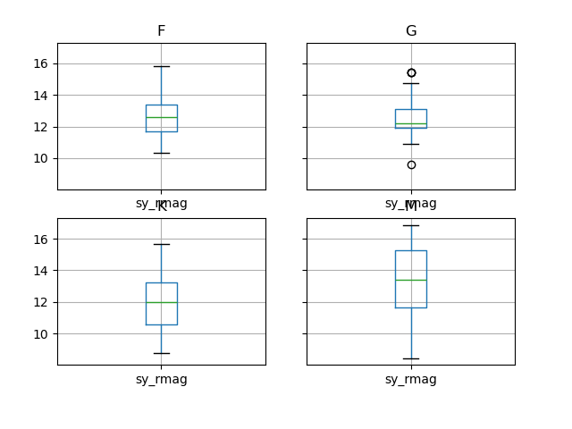

| pl_name | st_spectype | sy_umagstr | sy_gmagstr | sy_rmagstr | sy_imagstr | sy_zmagstr |
|---|---|---|---|---|---|---|
| OGLE-TR-10 b | nan | nan | nan | nan | nan | nan |
| BD-08 2823 b | K3 V | nan | nan | nan | nan | nan |
| BD-08 2823 c | K3 V | nan | nan | nan | nan | nan |
| HR 8799 c | A5 V | nan | nan | nan | nan | nan |
| HD 104985 b | nan | nan | nan | nan | nan | nan |
| 4 UMa b | K1 III | nan | nan | nan | nan | nan |
| HD 104985 b | G9 III | nan | nan | nan | nan | nan |
| kap CrB b | nan | nan | nan | nan | nan | nan |
| kap CrB b | nan | nan | nan | nan | nan | nan |
| kap CrB b | nan | nan | nan | nan | nan | nan |
Stellar Classification using Photometric data
Summary
In this report, we attempt to build a classification model using logistic regression which uses photo metric measurements from telescopes to classify stars under the Morgan-Keenan system. Our final classifier performed poorly with a low accuracy on testing data set with a tendency to classify stars as one class cooler than its actual class type. Our model can only classify stars into four main classes due to the small sample size. It is recommended that further study using larger sample sizes and methods to improve the classification model.
Introduction
Current and future astronomical surveys will observe hundred of thousands of objects each year. Due to the massive amount of spectroscopic and photometric data produced, an automated stellar classification process has become important in the field of astronomy in the past few years.
In astronomy, understanding the spectral characteristics of celestial objects serves as a fundamental pillar for unraveling the mysteries of the cosmos. Spectral classification, a cornerstone of astronomical research, enables us to discern the chemical composition, temperature, and evolutionary stage of stars, galaxies, and other celestial bodies. In the earliest days it was based on mass and temperature; however, our modern classification system has evolved and we classify stars based on the Morgan–Keenan (MK) system (Morgan, Keenan, and Kellman 1942) which group stars into 7 classes based on their spectral characteristics. Under the MK system, astronomers analyse electromagnetic radiation from stars to determine its class. These electromagnetic spectrum have dark lines to determine which and how abundant elements are present in the star. The seven classes in the MK system - O, B, A, F, G, K, and M - are sequenced from the hottest (O type) to the coolest (K type) which also exhibits a certain characteristic that is very visible - colour. Hence in this report, we will classify stars using photometric data and in the Discussion section, we will evaluate whether this is a reliable alternative for the traditional method of comparing the best fit of the spectra to that of templates using statistical tests (Duan et al. 2009).
Definitions
Photometry: the measurement of the flux or intensity of an astronomical object’s electromagnetic radiation
The photo metric system we’re using to classify star types is the Sloan system (Kent 1994) used by the Sloan Digital Sky Survey. The system measures the intensity of electromagnetic radition from stars at 5 bands: - u (345nm) - g (475nm which is a light blue in the visible spectrum) - r (622nm which is orange) - i (763nm which is deep red) - z (905nm)
Methods & Results
Data
This report has made use of the NASA Exoplanet Archive, which is operated by the California Institute of Technology, under contract with the National Aeronautics and Space Administration under the Exoplanet Exploration Program. NASA Exoplanet Archive collects data from various sources, including ground-based observatories and space telescopes such as the Kepler Space Telescope and the Transiting Exoplanet Survey Satellite (TESS). The dataset is we’re using is their Planetary Systems dataset which has the columns of names, spectral type and measurements using Sloan photometric system selected.
The Python programming language (Van Rossum and Drake Jr 1995) and the following Python packages were used to perform the analysis: matplotlib (Hunter 2007), scikit-learn (Pedregosa et al. 2011) and Pandas (McKinney et al. 2010).
Imports
First of all, let’s import the packages we will use to carry out the analysis and download the dataset. For our analysis we primarily used sklearn and pandas for our classification analysis as well as matplotlib for our visualizations.
Reading the Dataset
We then download the dataset of interest: the Expoplanet Systems dataset from NASA, containing information about measurements of planets and stars. We are interested in the spectral type of stars given a subset of these measurements.
Data EDA and Wrangling
This dataset from NASA’s Exoplanet Archive include all planets and stars. Therefore we will wrangle the dataset such that it only contain stars with Sloan magnitudes for photometric measurements.
Below in Table 2 our preprocessing included dropping NA values from our spec_type and band star brightness features. We are also only interested in the first letter of the spectral type, which becomes our y value later in the analysis, so we modified that feature as well.
| pl_name | st_spectype | sy_umag | sy_gmag | sy_rmag | sy_imag | sy_zmag |
|---|---|---|---|---|---|---|
| TOI-2084 b | M | 18.6919 | 16.0801 | 14.6494 | 17.9112 | 13.2406 |
| TOI-1801 b | M | 16.4486 | 12.6586 | 11.0055 | 10.2729 | 10.7555 |
| K2-133 c | M | 17.2832 | 15.2645 | 13.6265 | 12.9151 | 12.7195 |
| K2-133 e | M | 17.2832 | 15.2645 | 13.6265 | 12.9151 | 12.7195 |
| K2-133 d | M | 17.2832 | 15.2645 | 13.6265 | 12.9151 | 12.7195 |
| TOI-3785 b | M | 17.9187 | 15.4753 | 14.0744 | 13.2233 | 12.4056 |
| TOI-3984 A b | M | 19.1895 | 16.5597 | 15.1645 | 13.9346 | 13.2853 |
| TOI-1853 b | K | 15.5075 | 14.9806 | 11.9848 | 11.7529 | 11.8545 |
| Wolf 327 b | M | 16.6342 | 15.6776 | 14.839 | 14.9466 | 11.0601 |
| HD 81688 b | K | 13.0932 | 10.9213 | 9.31906 | 8.71834 | 7.85169 |
Note: In order to run classification models on our dataset, we had to remove the NA values from our magnitudes. We were planning to incorporate SimpleImputer() into our pipeline during data preprocessing, but about 2200 rows contained NA values, so we thought it was best to simply drop them. This explains the drastic decrease in observations.
Variable Descriptions:
st_spectype: Classification of the star based on their spectral characteristics following the Morgan-Keenan system
sy_umag: Brightness of the host star as measured using the Sloan Digital Sky Survey (SDSS) u band, in units of magnitudes
sy_gmag: Brightness of the host star as measured using the Sloan Digital Sky Survey (SDSS) g band, in units of magnitudes
sy_rmag: Brightness of the host star as measured using the Sloan Digital Sky Survey (SDSS) r band, in units of magnitudes
sy_imag: Brightness of the host star as measured using the Sloan Digital Sky Survey (SDSS) i band, in units of magnitudes
sy_zmag: Brightness of the host star as measured using the Sloan Digital Sky Survey (SDSS) z band, in units of magnitudes
From our Figure 1 visualization below we can see that our highest stellar value counts was for the M class, followed respectively by K, G, and F.
Histogram of Star Count Values
Now we will explore the features and boxplots of each band’s magnitude for our four types of stellar classifications.
| Unnamed: 0 | sy_umag | sy_umag.1 | sy_umag.2 | sy_umag.3 | sy_umag.4 | sy_umag.5 | sy_umag.6 | sy_umag.7 |
|---|---|---|---|---|---|---|---|---|
| nan | count | mean | std | min | 25% | 50% | 75% | max |
| st_spectype | nan | nan | nan | nan | nan | nan | nan | nan |
| F | 38.0 | 15.006642105263154 | 0.766401328650734 | 13.7542 | 14.7063 | 14.8961 | 15.2332 | 17.9494 |
| G | 102.0 | 15.184445098039218 | 0.5159733968557502 | 13.9531 | 15.005849999999999 | 15.166 | 15.4862 | 16.9794 |
| K | 112.0 | 15.60805535714286 | 0.8534817900324461 | 13.0932 | 15.0413 | 15.56765 | 15.8447 | 17.9905 |
| M | 121.0 | 17.467182644628096 | 1.812482452589895 | 14.5112 | 15.7198 | 17.2832 | 19.1895 | 21.2975 |
fig-sy-umagFrom boxplot Figure 1, for M-class of stars, the magnitude of the u-band is much higher than the remaining classes at 17.3 at the median.
| Unnamed: 0 | sy_gmag | sy_gmag.1 | sy_gmag.2 | sy_gmag.3 | sy_gmag.4 | sy_gmag.5 | sy_gmag.6 | sy_gmag.7 |
|---|---|---|---|---|---|---|---|---|
| nan | count | mean | std | min | 25% | 50% | 75% | max |
| st_spectype | nan | nan | nan | nan | nan | nan | nan | nan |
| F | 38.0 | 13.40213157894737 | 1.4915812676132458 | 10.7614 | 12.064725 | 13.243500000000001 | 14.971975 | 16.4513 |
| G | 102.0 | 13.375269607843137 | 1.0365262651636484 | 10.4929 | 12.65185 | 13.3064 | 14.1084 | 15.387 |
| K | 112.0 | 13.141451785714285 | 1.7709205577322165 | 10.0139 | 11.3126 | 13.0851 | 14.8948 | 16.0648 |
| M | 121.0 | 14.89958826446281 | 2.0709525814057472 | 9.91288 | 13.021 | 15.3392 | 16.452 | 18.7296 |
sy_gmag
Again, from boxplot Figure 2, for M-class of stars, the magnitude of the g-band is much higher than the remaining classes at 15.3 at the median.
| Unnamed: 0 | sy_rmag | sy_rmag.1 | sy_rmag.2 | sy_rmag.3 | sy_rmag.4 | sy_rmag.5 | sy_rmag.6 | sy_rmag.7 |
|---|---|---|---|---|---|---|---|---|
| nan | count | mean | std | min | 25% | 50% | 75% | max |
| st_spectype | nan | nan | nan | nan | nan | nan | nan | nan |
| F | 38.0 | 12.618894736842103 | 1.1898093983054072 | 10.3119 | 11.6961 | 12.58465 | 13.383525 | 15.7952 |
| G | 102.0 | 12.5939837254902 | 1.0916515281066876 | 9.62924 | 11.9247 | 12.1874 | 13.0922 | 15.3971 |
| K | 112.0 | 11.883027776785713 | 1.7091447231936758 | 8.75954 | 10.5964 | 12.024899999999999 | 13.1786 | 15.6566 |
| M | 121.0 | 13.427749586776859 | 2.0095481312538053 | 8.46313 | 11.6746 | 13.4888 | 15.2717 | 16.86 |

sy_rmag
Again, from boxplot Figure 3, for M-class of stars, the magnitude of the r-band is higher than the remaining classes at 13.4 at the median.
| Unnamed: 0 | sy_imag | sy_imag.1 | sy_imag.2 | sy_imag.3 | sy_imag.4 | sy_imag.5 | sy_imag.6 | sy_imag.7 |
|---|---|---|---|---|---|---|---|---|
| nan | count | mean | std | min | 25% | 50% | 75% | max |
| st_spectype | nan | nan | nan | nan | nan | nan | nan | nan |
| F | 38.0 | 12.576881578947368 | 1.3087761569920782 | 10.2734 | 11.621 | 12.457899999999999 | 13.171 | 15.4941 |
| G | 102.0 | 12.396317843137258 | 1.1410749290481463 | 9.44522 | 11.6457 | 11.9485 | 12.833225 | 16.6984 |
| K | 112.0 | 11.927328133928572 | 1.5619910548391103 | 8.42724 | 10.4417 | 12.0708 | 13.172 | 14.5213 |
| M | 121.0 | 12.67205818181818 | 2.1675341319081154 | 7.75055 | 10.9702 | 12.9151 | 14.3142 | 17.9112 |
sy_imag
From boxplot Figure 4, for all classes of stars, the magnitude at the i-band is similar.
| Unnamed: 0 | sy_zmag | sy_zmag.1 | sy_zmag.2 | sy_zmag.3 | sy_zmag.4 | sy_zmag.5 | sy_zmag.6 | sy_zmag.7 |
|---|---|---|---|---|---|---|---|---|
| nan | count | mean | std | min | 25% | 50% | 75% | max |
| st_spectype | nan | nan | nan | nan | nan | nan | nan | nan |
| F | 38.0 | 13.088815789473683 | 0.9374631863118148 | 10.4784 | 12.9808 | 13.17575 | 13.463275 | 15.2871 |
| G | 102.0 | 12.9710131372549 | 0.6918843048279733 | 9.60484 | 12.7326 | 13.046 | 13.3566 | 14.4078 |
| K | 112.0 | 11.853661964285717 | 1.5438856430050727 | 7.85169 | 10.6281 | 12.3442 | 13.094574999999999 | 13.9587 |
| M | 121.0 | 12.173695950413222 | 1.659763323241991 | 7.76319 | 11.0226 | 12.7195 | 13.2565 | 15.1016 |

sy_zmag
From boxplot Figure 5, for all classes of stars, the magnitude at the z-band is similar.
Classification Analysis
| pl_name | st_spectype | sy_umag | sy_gmag | sy_rmag | sy_imag | sy_zmag | |
|---|---|---|---|---|---|---|---|
| count | 373 | 373 | 373.000000 | 373.000000 | 373.000000 | 373.000000 | 373.000000 |
| unique | 219 | 4 | NaN | NaN | NaN | NaN | NaN |
| top | WASP-92 b | M | NaN | NaN | NaN | NaN | NaN |
| freq | 5 | 121 | NaN | NaN | NaN | NaN | NaN |
| mean | NaN | NaN | 16.034040 | 13.802282 | 12.653515 | 12.363340 | 12.388862 |
| std | NaN | NaN | 1.560836 | 1.849799 | 1.735937 | 1.691341 | 1.435804 |
| min | NaN | NaN | 13.093200 | 9.912880 | 8.463130 | 7.750550 | 7.763190 |
| 25% | NaN | NaN | 15.079600 | 12.463100 | 11.650100 | 11.386000 | 11.608400 |
| 50% | NaN | NaN | 15.548300 | 13.664600 | 12.539900 | 12.151500 | 12.839400 |
| 75% | NaN | NaN | 16.479300 | 15.199500 | 13.678000 | 13.425900 | 13.290800 |
| max | NaN | NaN | 21.297500 | 18.729600 | 16.860000 | 17.911200 | 15.287100 |
We can now get an informed description of our cleaned data Table 8
| pl_name | st_spectype | sy_umag | sy_gmag | sy_rmag | sy_imag | sy_zmag |
|---|---|---|---|---|---|---|
| 373 | 373 | 373 | 373 | 373 | 373 | 373 |
| 219 | 4 | nan | nan | nan | nan | nan |
| WASP-92 b | M | nan | nan | nan | nan | nan |
| 5 | 121 | nan | nan | nan | nan | nan |
| nan | nan | 16.034 | 13.8023 | 12.6535 | 12.3633 | 12.3889 |
| nan | nan | 1.56084 | 1.8498 | 1.73594 | 1.69134 | 1.4358 |
| nan | nan | 13.0932 | 9.91288 | 8.46313 | 7.75055 | 7.76319 |
| nan | nan | 15.0796 | 12.4631 | 11.6501 | 11.386 | 11.6084 |
| nan | nan | 15.5483 | 13.6646 | 12.5399 | 12.1515 | 12.8394 |
| nan | nan | 16.4793 | 15.1995 | 13.678 | 13.4259 | 13.2908 |
| nan | nan | 21.2975 | 18.7296 | 16.86 | 17.9112 | 15.2871 |
We can now set our y to be the value we are predicting which is spec_type and our predictors will be the following features: sy_umag, sy_gmag, sy_rmag, sy_imag, sy_zmag. From this we created a 75% train test split to run our data.
st_spectype
M 0.337165
K 0.295019
G 0.275862
F 0.091954
Name: proportion, dtype: float64| proportion |
|---|
| 0.337165 |
| 0.295019 |
| 0.275862 |
| 0.091954 |
As seen from Table 9 we have a pretty spread out class with no major class imbalance.
fit_time 0.003817
score_time 0.000981
test_score 0.674528
train_score 0.721260
dtype: float64| Unnamed: 0 | 0 |
|---|---|
| fit_time | 0.00338473 |
| score_time | 0.0008708 |
| test_score | 0.674528 |
| train_score | 0.72126 |
Confusion Matrix
One way to get a better understanding of the errors is by looking at how well the classifier is identifying each class. Which classes are most frequently confused with each other. Overall accuracy, along with class-specific metrics like precision, recall, and F1-score for multi-class classification problems.
It’s easier to demonstrate evaluation metrics using an explicit validation set instead of using cross-validation. So let’s create a validation set as seen below in Table 11.
| 0 | 1 | 2 | 3 |
|---|---|---|---|
| 0 | 6 | 0 | 0 |
| 0 | 21 | 8 | 0 |
| 0 | 2 | 11 | 7 |
| 0 | 0 | 2 | 22 |
For better interpretation, we will visualize the confusion matrix Figure 6.
We can now calculate our accuracy score given by Table 12 using our Random Forest Classifier given below.
| 0 | 1 | 2 | 3 |
|---|---|---|---|
| 0 | 6 | 0 | 0 |
| 0 | 21 | 8 | 0 |
| 0 | 2 | 11 | 7 |
| 0 | 0 | 2 | 22 |
From this we can provide cross validation scores given in Table 13 using our Random Forest Classifier.
/home/baron/vanc/DSCI-310-Group-16/venv/dsci/lib/python3.11/site-packages/sklearn/base.py:486: UserWarning: X has feature names, but RandomForestClassifier was fitted without feature names
warnings.warn(Accuracy: 0.29464285714285715fit_time 0.174118
score_time 0.005711
test_score 0.827504
train_score 0.987551
dtype: float64| Unnamed: 0 | 0 |
|---|---|
| fit_time | 0.00338473 |
| score_time | 0.0008708 |
| test_score | 0.674528 |
| train_score | 0.72126 |
Ultimately from our validation scores, we achieve a much higher test score from our scaled data with the RandomForestClassifier model of 0.675 compared to LogisticRegression model of 0.675. However our accuracy score is quite low at 0.
Discussion
Our model yielded pretty average results with final overall accuracy of 0. This model is not good enough for an automated stellar classification process. In addition, our model can only classify stars into four classes due to the limited sample size. However these four classes make up about 99.8% of stellar population (Ledrew 2001) so being unable to classify stars into remaining three classes isn’t as big of an issue. Looking at the confusion matrix, we can see that our model tend to classify stars as cooler than they actually are (e.g: nine stars were classified as G but were actually F class). In order to improve this model, a larger sample size would help like using the Sloan Digital Sky Survey dataset instead. Another way to improve the model is to explore other classification methods such as k nearest neighbours. Finally, using another photometric system such as UBV could help since the bands are more seperated resulting in larger difference in magnitudes between star classes. More research into other classification methods could most likely yield higher accuracy.
References
Duan, Fu-Qing, Rong Liu, Ping Guo, Ming-Quan Zhou, and Fu-Chao Wu. 2009. “Automated Spectral Classification Using Template Matching.” Research in Astronomy and Astrophysics 9 (3): 341.
Hunter, John D. 2007. “Matplotlib: A 2D Graphics Environment.” Computing in Science & Engineering 9 (03): 90–95.
Kent, Stephen M. 1994. “Sloan Digital Sky Survey.” Astrophysics and Space Science 217: 27–30.
Ledrew, Glenn. 2001. “The Real Starry Sky.” Journal of the Royal Astronomical Society of Canada, Vol. 95, p. 32 95: 32.
McKinney, Wes et al. 2010. “Data Structures for Statistical Computing in Python.” In SciPy, 445:51–56. 1.
Morgan, WW, Philip C Keenan, and Edith Kellman. 1942. “An Atlas of Stellar Spectra.” University of Chicago.
Pedregosa, Fabian, Gaël Varoquaux, Alexandre Gramfort, Vincent Michel, Bertrand Thirion, Olivier Grisel, Mathieu Blondel, et al. 2011. “Scikit-Learn: Machine Learning in Python.” The Journal of Machine Learning Research 12: 2825–30.
Van Rossum, Guido, and Fred L Drake Jr. 1995. “Python Tutorial.” Centrum voor Wiskunde en Informatica Amsterdam, The Netherlands.